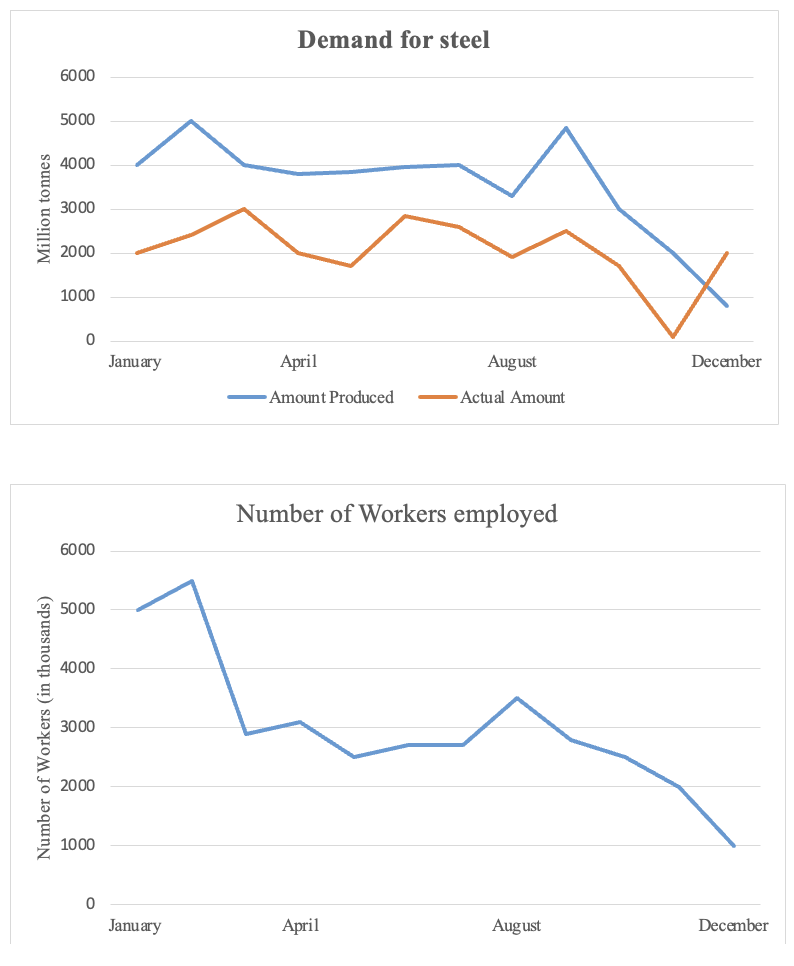

Task 1
You should spend about 20 minutes on this task.
The line graphs below show the production and demand for steel in million tonnes and the number of workers employed in the steel industry in the UK in 2010.
Summarise the information by selecting and reporting the main features making comparisons where relevant.
Write at least 150 words.
Task 2
Write about the following topic:
You should spend about 40 minutes on this task.
People are living in a 'throwaway society', using things for a short time
and then throwing them away.
What are the causes of this?
What problems does it lead to?
Give reasons for your answer and include any relevant examples from your own knowledge or experience.
Write at least 250 words.